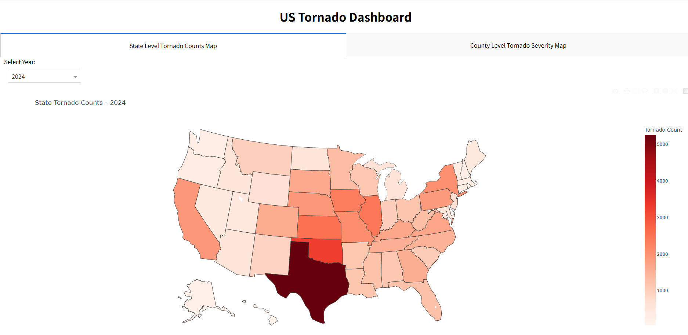
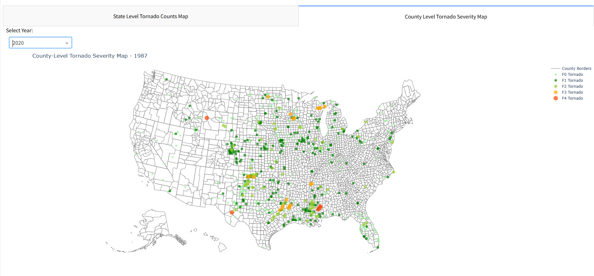

Tornadoes are powerful and destructive weather phenomena. Understanding their historical occurrence, intensity, and geographical distribution is crucial for awareness and preparedness. This post walks through the creation of an interactive web dashboard built using Python, specifically leveraging the Dash framework and Plotly for visualizations. The dashboard allows users to explore US tornado data from 1980 to 2024, visualizing events on a map, examining state-level counts, and analyzing trends over time.
We’ll cover:
Data Acquisition: Downloading historical weather event data.
Data Processing & Cleaning: Filtering for tornadoes, standardizing scales, and preparing the data for visualization using Pandas.
Dashboard Layout: Structuring the web application interface with Dash components.
Interactive Visualizations: Creating dynamic maps and charts with Plotly that respond to user input.
Let’s dive into the code!
1. Data Acquisition and Initial Setup
The foundation of our dashboard is historical weather data. We’re using a dataset containing US weather events from 1980-2024, sourced from a publicly accessible Google Drive link.
The first part of our script handles fetching this data:
import osimport pandas as pdimport requests# Note: We won't actually run the download here in the blog post, # but we show the code used in the app.# 🔹 Google Drive File ID (Extracted from your link)file_id ="1WDsm4qBNcGg8MOskRcLvSRGRU41Ef6rX"# 🔹 Construct direct Google Drive download URLcsv_url =f"https://drive.usercontent.google.com/download?id={file_id}&export=download&confirm=t"# 🔹 Define the local file path# In the actual app, __file__ gives the script's directory. # For this example, we'll just define a name.csv_path ='us-weather-events-1980-2024.csv'# 🔹 Download the file if it does not exist (Simplified logic for blog post)# The original script includes robust error checking for download status, # content type (to avoid Google's virus scan page), and basic CSV integrity.ifnot os.path.exists(csv_path):print(f"Simulating download check for: {csv_path}")print("--> In the actual app, this step would download the file if missing.")# Placeholder: Assume file exists for the rest of the explanation.# In a real notebook run for the blog, you might actually download it,# or point to a pre-downloaded local copy.passelse:print(f"File '{csv_path}' already exists.")# Example: Show how to manually download if needed for the notebook environment# try:# print("Attempting download for notebook demonstration...")# response = requests.get(csv_url, stream=True, timeout=60)# if response.status_code == 200 and "text/html" not in response.headers.get("Content-Type", ""):# with open(csv_path, 'wb') as file:# for chunk in response.iter_content(chunk_size=8192):# file.write(chunk)# print("Download complete for notebook.")# else:# print(f"Failed to download or got HTML page. Status: {response.status_code}")# except Exception as e:# print(f"Error during notebook download attempt: {e}")
Simulating download check for: us-weather-events-1980-2024.csv
--> In the actual app, this step would download the file if missing.
2. Data Processing and Cleaning with Pandas
Raw weather data often requires significant cleaning and transformation. The dataset is large, so we use Pandas’ chunksize option to process it efficiently without loading everything into memory at once.
Key processing steps include:
Selecting Relevant Columns: We only load columns needed for the analysis (EVENT_TYPE, BEGIN_DATE_TIME, STATE, coordinates, and TOR_F_SCALE).
Filtering for Tornadoes: We isolate records where the EVENT_TYPE contains “Tornado”.
Date Handling: The BEGIN_DATE_TIME column is converted to datetime objects, and the YEAR is extracted. Invalid dates are dropped.
Coordinate Handling: Rows with missing latitude or longitude are removed.
EF Scale Standardization: This is crucial. The original data uses both the older Fujita (F) scale and the Enhanced Fujita (EF) scale. We standardize these:
Convert all scale values to uppercase and strip whitespace.
Filter out invalid or non-standard scale entries.
Map the older F-scale values (F0-F5) to their EF-scale equivalents (EF0-EF5) for consistent visualization.
Create a numeric SEVERITY column (0-5) based on the EF scale for potential future use or simpler sorting/coloring.
Grouping Data: We create aggregated DataFrames:
df_grouped: Counts tornadoes per state per year.
df_ef_grouped: Counts tornadoes per state, per year, and per EF scale.
State Name Standardization: State names are converted to title case, and abbreviations are added using a dictionary mapping for use in the choropleth map.
# --- Libraries needed for processing ---import pandas as pdimport numpy as np # Often useful, though not strictly required by the snippet below# --- Assume csv_path points to the downloaded file ---# Check if file exists before trying to readif os.path.exists(csv_path):print(f"Processing '{csv_path}'...")try:# Load necessary columns including coordinates and EF scale use_columns = ["EVENT_TYPE", "BEGIN_DATE_TIME", "STATE", "BEGIN_LAT", "BEGIN_LON", "TOR_F_SCALE"] chunks = [] chunk_size =100000for chunk in pd.read_csv(csv_path, encoding="utf-8", low_memory=False, usecols=use_columns, chunksize=chunk_size):# Standardize column names chunk.columns = chunk.columns.str.strip().str.upper()# Filter for tornado events tornado_chunk = chunk[chunk["EVENT_TYPE"].str.contains("Tornado", case=False, na=False)].copy() chunks.append(tornado_chunk)ifnot chunks:raiseValueError("No tornado data found after filtering.") df_tornado = pd.concat(chunks, ignore_index=True)# Convert the "BEGIN_DATE_TIME" column to datetime df_tornado["BEGIN_DATE_TIME"] = pd.to_datetime(df_tornado["BEGIN_DATE_TIME"], errors="coerce")# Drop rows with invalid dates and extract the year df_tornado = df_tornado.dropna(subset=["BEGIN_DATE_TIME"]) df_tornado["YEAR"] = df_tornado["BEGIN_DATE_TIME"].dt.year.astype(int) # Ensure year is integer# Drop rows with missing coordinates df_tornado = df_tornado.dropna(subset=["BEGIN_LAT", "BEGIN_LON"])# Clean and standardize EF scale df_tornado["TOR_F_SCALE"] = df_tornado["TOR_F_SCALE"].str.upper().str.strip() valid_scales = ["F0", "F1", "F2", "F3", "F4", "F5", "EF0", "EF1", "EF2", "EF3", "EF4", "EF5"] df_tornado = df_tornado[df_tornado["TOR_F_SCALE"].isin(valid_scales)]# Convert older F scale to EF equivalent df_tornado["EF_SCALE"] = df_tornado["TOR_F_SCALE"].str.replace("F", "EF")# Create a numeric scale for severity coloring ef_to_num = {"EF0": 0, "EF1": 1, "EF2": 2, "EF3": 3, "EF4": 4, "EF5": 5} df_tornado["SEVERITY"] = df_tornado["EF_SCALE"].map(ef_to_num)# Group by state and year to count tornadoes df_grouped = df_tornado.groupby(["STATE", "YEAR"]).size().reset_index(name="TORNADO_COUNT")# Group by state, year, and EF scale for detailed analysis df_ef_grouped = df_tornado.groupby(["STATE", "YEAR", "EF_SCALE"]).size().reset_index(name="COUNT")# --- State Abbreviation Mapping (as in app.py) --- state_abbrev_map = {"Alabama": "AL", "Alaska": "AK", "Arizona": "AZ", "Arkansas": "AR", "California": "CA", "Colorado": "CO", "Connecticut": "CT", "Delaware": "DE", "Florida": "FL", "Georgia": "GA", "Hawaii": "HI", "Idaho": "ID", "Illinois": "IL", "Indiana": "IN", "Iowa": "IA", "Kansas": "KS","Kentucky": "KY", "Louisiana": "LA", "Maine": "ME", "Maryland": "MD", "Massachusetts": "MA", "Michigan": "MI", "Minnesota": "MN", "Mississippi": "MS", "Missouri": "MO", "Montana": "MT","Nebraska": "NE", "Nevada": "NV", "New Hampshire": "NH", "New Jersey": "NJ", "New Mexico": "NM", "New York": "NY", "North Carolina": "NC", "North Dakota": "ND", "Ohio": "OH", "Oklahoma": "OK","Oregon": "OR", "Pennsylvania": "PA", "Rhode Island": "RI", "South Carolina": "SC", "South Dakota": "SD", "Tennessee": "TN", "Texas": "TX", "Utah": "UT", "Vermont": "VT", "Virginia": "VA", "Washington": "WA", "West Virginia": "WV", "Wisconsin": "WI", "Wyoming": "WY" } abbrev_state = {v: k for k, v in state_abbrev_map.items()} # Inverse map# Standardize state names and add abbreviationsfor df in [df_grouped, df_ef_grouped, df_tornado]: # Apply to all relevant dfsif"STATE"in df.columns: df["STATE"] = df["STATE"].str.title() df["STATE_ABBREV"] = df["STATE"].map(state_abbrev_map)# Drop rows where state mapping failed (e.g., territories, non-states) df.dropna(subset=["STATE_ABBREV"], inplace=True)print("Sample of Processed Tornado Data (df_tornado):") display(df_tornado.head())print("\nSample of State/Year Grouped Data (df_grouped):") display(df_grouped.head())print("\nSample of State/Year/EF Scale Grouped Data (df_ef_grouped):") display(df_ef_grouped.head()) available_years =sorted(df_tornado["YEAR"].unique())print(f"\nAvailable Years: {available_years[:5]}...{available_years[-5:]}")exceptFileNotFoundError:print(f"ERROR: CSV file not found at '{csv_path}'. Cannot proceed with processing.")# Define empty dataframes or exit if this were a script df_tornado = pd.DataFrame() df_grouped = pd.DataFrame() df_ef_grouped = pd.DataFrame() available_years = []exceptValueErroras ve:print(f"ERROR: {ve}") df_tornado = pd.DataFrame() df_grouped = pd.DataFrame() df_ef_grouped = pd.DataFrame() available_years = []exceptExceptionas e:print(f"An unexpected error occurred during processing: {e}")# Define empty dataframes or exit df_tornado = pd.DataFrame() df_grouped = pd.DataFrame() df_ef_grouped = pd.DataFrame() available_years = []else:print(f"Skipping processing: File '{csv_path}' not found.")# Define empty dataframes if file not found df_tornado = pd.DataFrame() df_grouped = pd.DataFrame() df_ef_grouped = pd.DataFrame() available_years = []# Define EF scale colors (needed later for plots)ef_colors = {"EF0": "#abd9e9", "EF1": "#74add1", "EF2": "#4575b4","EF3": "#f46d43", "EF4": "#d73027", "EF5": "#a50026"}
Skipping processing: File 'us-weather-events-1980-2024.csv' not found.
3. Designing the Dashboard Layout with Dash
Dash applications are composed of a layout, which describes what the application looks like, and callbacks, which define the interactivity. The layout uses Dash HTML Components (like html.H1, html.Div) and Dash Core Components (like dcc.Dropdown, dcc.Graph, dcc.Tabs).
Our layout includes:
A main title.
Control elements:
A dropdown (dcc.Dropdown) to select the year.
A checklist (dcc.Checklist) to filter by EF scale.
Tabs (dcc.Tabs) to switch between different views:
State Heatmap: Shows the total count of tornadoes per state.
Graphs placeholders (dcc.Graph) for the visualizations.
A lower section displaying:
A line chart showing tornado trends over time.
A bar chart showing the distribution of tornadoes by EF scale.
# --- Libraries for Dash layout ---from dash import Dash, dcc, html # Note: In the full app, Input and Output are also imported here.# --- Building the layout (conceptual view) ---# This shows the structure; it won't run standalone without the app context.# Assuming 'available_years' is populated from the previous step# If 'available_years' is empty, handle gracefully (e.g., disable dropdown or show message)default_year = available_years[-1] if available_years elseNoneyear_options = [{"label": str(year), "value": year} for year in available_years] if available_years else []# Define the layout structureapp_layout = html.Div([ html.H1("US Tornado Dashboard (1980-2024)", style={"textAlign": "center"}),# --- Controls --- html.Div([# Year Dropdown html.Div([ html.Label("Select Year:"), dcc.Dropdown(id="year-dropdown", options=year_options, value=default_year, clearable=False, style={"width": "100%"}, disabled=notbool(available_years) # Disable if no years loaded ) ], style={"width": "30%", "display": "inline-block", "padding": "10px"}),# EF Scale Checklist html.Div([ html.Label("EF Scale Filter:"), dcc.Checklist(id="ef-scale-filter", options=[{"label": f"EF{i}", "value": f"EF{i}"} for i inrange(6)], value=[f"EF{i}"for i inrange(6)], # Default to all selected inline=True ) ], style={"width": "70%", "display": "inline-block", "padding": "10px"}) ]),# --- Tabs for Maps --- dcc.Tabs([ dcc.Tab(label="Tornado Map", children=[ dcc.Graph(id="tornado-map") # Placeholder for scatter map ]), dcc.Tab(label="State Heatmap", children=[ dcc.Graph(id="choropleth-map") # Placeholder for choropleth ]) ]), html.Hr(), # Separator# --- Lower Charts --- html.Div([# Line Chart html.Div([ html.H2(id="line-chart-title", style={"textAlign": "center"}), dcc.Graph(id="line-chart") # Placeholder ], style={"width": "50%", "display": "inline-block"}),# Bar Chart html.Div([ html.H2(id="ef-distribution-title", style={"textAlign": "center"}), dcc.Graph(id="ef-distribution-chart") # Placeholder ], style={"width": "50%", "display": "inline-block"}) ])])print("Dash layout structure defined (this is just the definition, not a running app).")# In a real app, you would assign this to app.layout# app = Dash(__name__)# app.layout = app_layout
Dash layout structure defined (this is just the definition, not a running app).

State Level Tornado Counts Map
4. Interactive Visualizations with Callbacks
The magic of Dash lies in its callbacks. These are Python functions decorated with @app.callback that automatically update parts of the layout (like graphs) in response to changes in user input (like dropdown selections or map clicks).
Our dashboard uses several callbacks:
update_tornado_map:
Inputs: Selected year (year-dropdown), selected EF scales (ef-scale-filter).
Output: Updates the tornado-map graph.
Logic: Filters the df_tornado DataFrame for the chosen year and EF scales. Creates a plotly.express.scatter_mapbox showing individual tornado locations, colored by EF scale using our predefined ef_colors.
update_choropleth:
Inputs: Selected year (year-dropdown), selected EF scales (ef-scale-filter).
Output: Updates the choropleth-map graph.
Logic: Filters the df_ef_grouped DataFrame for the chosen year and selected scales. Aggregates the tornado counts by state. Creates a plotly.express.choropleth map visualizing the total tornado count per state for that year and scale selection.
update_charts (Linked Charts):
Inputs: Click data from the choropleth map (choropleth-map), selected EF scales (ef-scale-filter).
Outputs: Updates the line-chart, its title (line-chart-title), the ef-distribution-chart, and its title (ef-distribution-title).
Logic:
Determines if a state was clicked on the choropleth map. If not, it defaults to showing national data.
Line Chart: Filters df_ef_grouped based on the clicked state (or uses all states for national view) and selected EF scales. Groups the results by year to calculate the annual tornado count and plots this trend using plotly.express.line.
EF Distribution Bar Chart: Filters df_ef_grouped based on the clicked state (or national data). Groups the results by EF scale across all years (1980-2024) for the selected region. Creates a plotly.express.bar chart showing the total count for each EF scale category, ordered correctly and colored using ef_colors.
Updates the titles of both charts dynamically to reflect whether state-specific or national data is being shown.
# --- Libraries for Dash callbacks and Plotly ---from dash import Input, Output, State # State not used here, but often isimport plotly.express as pximport plotly.graph_objects as go # Sometimes needed for more customization# --- Callback Function Definitions (Conceptual) ---# These functions show the logic. They need the Dash app context (@app.callback) # and the previously defined DataFrames (df_tornado, df_grouped, df_ef_grouped) # and mappings (abbrev_state, ef_colors) to run.# --- Callback 1: Update Tornado Scatter Map ---def update_tornado_map(selected_year, selected_ef_scales):print(f"Updating tornado map for Year: {selected_year}, Scales: {selected_ef_scales}")if selected_year isNoneornot selected_ef_scales or df_tornado.empty:return go.Figure().update_layout(title="No data to display") # Return empty fig dff = df_tornado[(df_tornado["YEAR"] == selected_year) & (df_tornado["EF_SCALE"].isin(selected_ef_scales))]if dff.empty:return go.Figure().update_layout(title=f"No tornadoes found for {selected_year} with selected scales.") fig = px.scatter_mapbox( dff, lat="BEGIN_LAT", lon="BEGIN_LON", color="EF_SCALE", color_discrete_map=ef_colors, hover_name="STATE", hover_data={"EF_SCALE": True, "BEGIN_DATE_TIME": True, "BEGIN_LAT": False, "BEGIN_LON": False}, zoom=3, height=600, title=f"Tornado Events in {selected_year} by EF Scale" ) fig.update_layout(mapbox_style="carto-positron", margin={"r":0,"t":50,"l":0,"b":0})return fig# --- Callback 2: Update Choropleth Map ---def update_choropleth(selected_year, selected_ef_scales):print(f"Updating choropleth map for Year: {selected_year}, Scales: {selected_ef_scales}")if selected_year isNoneornot selected_ef_scales or df_ef_grouped.empty:return go.Figure().update_layout(title="No data to display") dff_ef = df_ef_grouped[(df_ef_grouped["YEAR"] == selected_year) & (df_ef_grouped["EF_SCALE"].isin(selected_ef_scales))]# Aggregate counts for the selected EF scales per state dff = dff_ef.groupby(["STATE", "STATE_ABBREV"])["COUNT"].sum().reset_index()if dff.empty:return go.Figure().update_layout(title=f"No tornadoes found for {selected_year} with selected scales.") fig = px.choropleth( dff, locations="STATE_ABBREV", locationmode="USA-states", color="COUNT", color_continuous_scale="Reds", scope="usa", labels={"COUNT": "Tornado Count"}, hover_data={"STATE": True, "COUNT": True}, title=f"Tornado Count by State in {selected_year}" ) fig.update_layout(height=600)return fig# --- Callback 3: Update Linked Line and Bar Charts ---def update_charts(clickData, selected_ef_scales): state_abbrev_clicked =None state_full ="United States"if clickData:try: # Add error handling for potentially malformed clickData state_abbrev_clicked = clickData["points"][0]["location"] state_full = abbrev_state.get(state_abbrev_clicked, state_abbrev_clicked) # Use full nameexcept (KeyError, IndexError):print("Error parsing clickData, defaulting to US.")print(f"Updating linked charts for Region: {state_full}, Scales: {selected_ef_scales}")if df_ef_grouped.empty ornot selected_ef_scales: empty_fig = go.Figure().update_layout(title="No data to display")return empty_fig, "Trend Chart", empty_fig, "Distribution Chart"# --- Line Chart Data ---if state_abbrev_clicked: dff_line_data = df_ef_grouped[(df_ef_grouped["STATE_ABBREV"] == state_abbrev_clicked) & (df_ef_grouped["EF_SCALE"].isin(selected_ef_scales))]else: # National dff_line_data = df_ef_grouped[df_ef_grouped["EF_SCALE"].isin(selected_ef_scales)] dff_yearly = dff_line_data.groupby("YEAR")["COUNT"].sum().reset_index()# --- Bar Chart Data ---if state_abbrev_clicked: dff_bar_data = df_ef_grouped[df_ef_grouped["STATE_ABBREV"] == state_abbrev_clicked] # Use all scales for historical distributionelse: # National dff_bar_data = df_ef_grouped.copy() # Use all scales dff_ef_summary = dff_bar_data.groupby("EF_SCALE")["COUNT"].sum().reset_index()# --- Create Figures --- line_title =f"Tornado Trend in {state_full} (1980-2024, Selected Scales)"ifnot dff_yearly.empty: line_fig = px.line(dff_yearly, x="YEAR", y="COUNT", markers=True, title=line_title) line_fig.update_layout(xaxis_title="Year", yaxis_title="Tornado Count")else: line_fig = go.Figure().update_layout(title=f"{line_title} (No Data)") dist_title =f"Total EF Scale Distribution in {state_full} (1980-2024)"ifnot dff_ef_summary.empty: ef_order = ["EF0", "EF1", "EF2", "EF3", "EF4", "EF5"] dff_ef_summary["EF_SCALE"] = pd.Categorical(dff_ef_summary["EF_SCALE"], categories=ef_order, ordered=True) dff_ef_summary = dff_ef_summary.sort_values("EF_SCALE") ef_dist_fig = px.bar( dff_ef_summary, x="EF_SCALE", y="COUNT", color="EF_SCALE", color_discrete_map=ef_colors, title=dist_title ) ef_dist_fig.update_layout(xaxis_title="EF Scale", yaxis_title="Total Count (1980-2024)")else: ef_dist_fig = go.Figure().update_layout(title=f"{dist_title} (No Data)")return line_fig, line_title, ef_dist_fig, dist_title# --- Example call simulations (for blog post demonstration) ---# You would need actual Dash context (@app.callback) to run these interactively.print("\n--- Simulating Callback Outputs (using last available year and all scales) ---")if available_years andnot df_tornado.empty: last_year = available_years[-1] all_scales = [f"EF{i}"for i inrange(6)]print("\nSimulating Tornado Map:")# fig1 = update_tornado_map(last_year, all_scales)# fig1.show() # This would display the plot in the notebook if runprint(f"(Code would generate scatter map for {last_year})")print("\nSimulating Choropleth Map:")# fig2 = update_choropleth(last_year, all_scales)# fig2.show() print(f"(Code would generate choropleth for {last_year})")print("\nSimulating Linked Charts (National View):")# fig3, title3, fig4, title4 = update_charts(None, all_scales) # None for clickData = National# print(title3); fig3.show()# print(title4); fig4.show()print("(Code would generate national trend line and distribution bar charts)")else:print("Skipping callback simulation as dataframes are empty or file was not processed.")
--- Simulating Callback Outputs (using last available year and all scales) ---
Skipping callback simulation as dataframes are empty or file was not processed.

County Level Tornado Severity Map
5. Running the Application
The app.py script includes the standard boilerplate code to run the Dash development server locally:
```python if name == “main”: # Use port from environment variable or default to 8050 port = int(os.environ.get(“PORT”, 8050)) # Run the server, debug=True enables hot-reloading and error messages in browser app.run_server(debug=True, host=“0.0.0.0”, port=port)
To run this application: Save the complete code as app.py. Make sure you have the required libraries installed (pip install pandas requests dash plotly). Navigate to the directory containing app.py in your terminal. Run the script: python app.py Open your web browser and go to http://127.0.0.1:8050/ (or the address shown in the terminal). The host=“0.0.0.0” makes the app accessible from other devices on your network, and debug=True is helpful during development but should be turned off for production deployment.
Cell 12: Conclusion (Markdown Cell)
```markdown ## Conclusion
This project demonstrates how to build a powerful, interactive data visualization dashboard using Dash and Plotly. By combining careful data processing with Pandas and the flexible layout and callback system of Dash, we created a tool to explore decades of US tornado data. Users can filter by year and intensity, visualize geographic patterns, and drill down into state-specific trends.
Potential future enhancements could include:
Adding more filtering options (e.g., date range, specific states).
Incorporating data on tornado paths (if available) instead of just start points.
Adding summary statistics cards.
Deploying the application to a web server for public access.
This dashboard serves as a great example of how Python’s data science ecosystem can be used to create engaging and informative web applications.